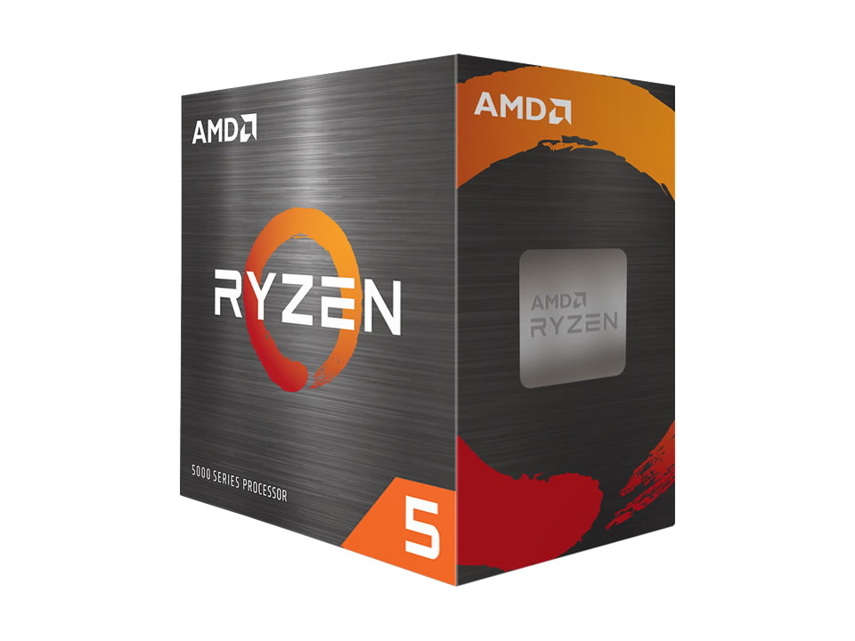

O Processador AMD Ryzen 5 5500 6C/12T 3.6GHz (4.2 GHz Turbo) AM4 COOLER AMD WRAITH STEALTH é um processador para desktop. 6 núcleos e 12 threads, Clock 3.6 GHz, turbo até 4.2 GHz, Soquete AM4, Cooler incluso. Confira se o soquete é o mesmo da sua placa-mãe antes de comprar.